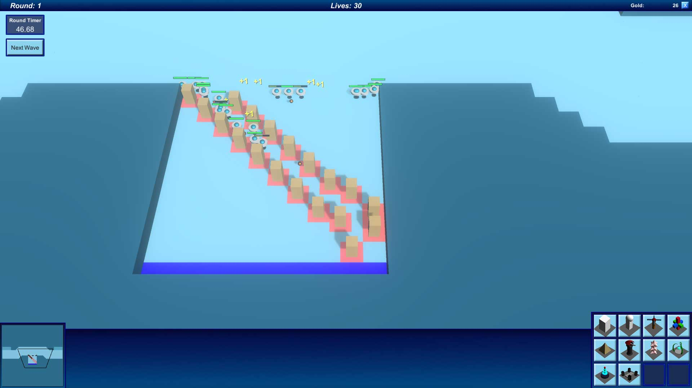
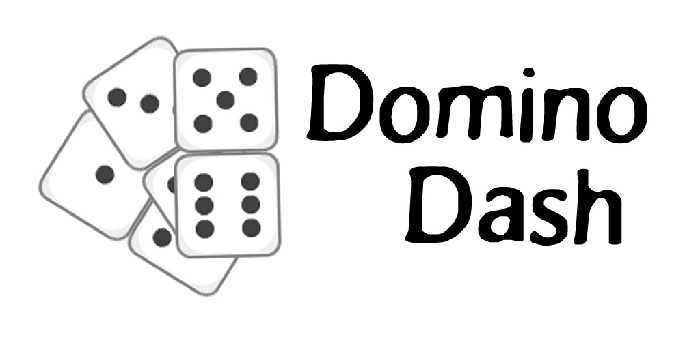

Carta

Carta is a puzzle platformer where the player must manipulate the paper world in order to help Carta reclaim their lost map pieces and return home.
Carta was my final-year, university capstone project. I worked alongside a team of 2 programmers and 5 designers to create this cute little platformer. Despite being a programmer, I actually did a lot of design work too as I experimented with a lot of different gameplay mechanics and VFX. It was a great experience working in a larger team and at the end of the year, we exhibited our game at PAX Australia. We were also lucky enough to be the winners of the GCAP Student Showcase for 2017.
Visit dedicated game website
Untitled Tower Defence Game

Build towers to eliminate waves of enemy units before they reach your end zone and take all of your lives.
This is the first proper PC game that I made. I created all of the 3D models myself, learning how to use Blender through online tutorials. This game features multithreaded pathfinding so each enemy unit can find its way in a performant manner.
View on GitHub
Multiplayer Checkers

Asynchronous online multiplayer checkers
I made multiplayer checkers because I wanted to make a proper multiplayer game. A NodeJS server runs on an AWS EC2 instance and every client communicates with that. The game logic is implemented on the server so cheating by sending fake data is not possible. Each game is stored in a database so that either player can quit the game and come back to it later (hence the 'asynchronous' title). All of the network code is using low-level network sockets (as opposed to Unity's built-in solution).
View Google Play Store page
Post Haste

Pickup packages from the depot in your flying van and deliver them to the correct houses. Make as many deliveries as you can before time runs out!
I developed Post Haste with a small team during Global Game Jam 2016. It was my first experience of working in a team and despite the fact that the game itself is not that complex, I am proud of what we managed to create in a 48 hour period.
View Global Game Jam Page
Mad Cow

Mad cow disease has broken out in a small farm. Play as either a farmer trying to put down the affected cows before they infect the herd; or as a mad cow, fighting for its life.
My first mobile game. Made with Unity and published to the Google Play Store. I am really happy with how it turned out.
View Google Play Store Page
Domino Dash

Line up dominoes as they head off the screen. Place as many as you can before they get away from you!
A mobile game that I created and released in a small amount of time. It was a challenge to ensure there is always a valid move available, when the player places a domino out of order, due to there being 2 with the same number on top, but I managed to figure it out by re-ordering all of the dominoes below the selected one.
View Google Play Store page
Untitled Top-Down Stealth Shooter

Evade the guards and security bots. Grab the intel without getting caught.
A proof-of-concept game for a unit titled 'AI for Games'. This project demonstrates pathfinding, finite state machines, behaviour trees, swarm/flocking behaviour and goal oriented action behaviour.
View on GitHub
packetLoss

Waves of swarming data packets must be routed to the centre, ensuring everyone’s data is delivered in a timely manner. Lose too many packets and it's game over.
packetLoss was created at Global Game Jam 2017. I jammed with some workmates who had never worked on a game before so it was a lot of fun and we all learnt a lot. The gameplay is very minimalistic but we had some good artists so I think the visuals are quite striking.
View Global Game Jam page